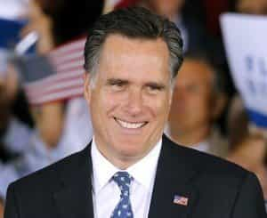
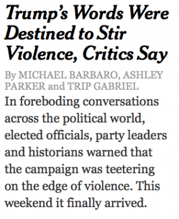
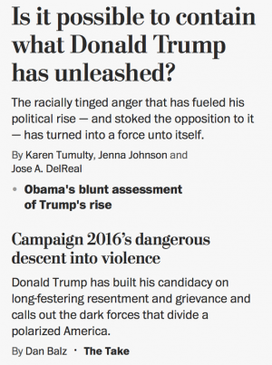
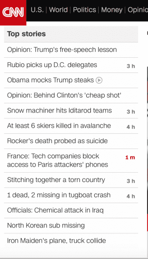
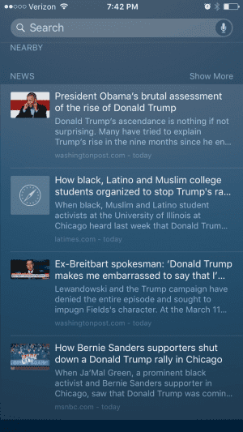

Michael is the author of Staying Married in a Degenerate Age. Follow him on Twitter or Facebook. You can read more of his writing at Honor and Daring.


Donald Trump evokes strong passions. Most people either love him or hate him. But the people who hate him at the highest levels of power are much more numerous—and they are more wealthy and powerful than his supporters.
This past week, we’ve watched this play out before our eyes as the elites, through the media, have started to create a narrative designed to paint Trump and his supporters as violent, dangerous bigots who must be eliminated at all costs.

The media narrative that Trump’s words inspire violence seems to have sprung from thin air on Friday. It didn’t. To really understand why that narrative emerged now, we have to look at events that led up to it. The prior week, Trump had undergone unprecedented attacks from his challengers and the GOP establishment. First, Mitt Romney delivered a speech attacking Trump from every angle, even hitting Trump for sleeping with attractive women.
Next, Marco Rubio was designated to be the GOP establishment attack dog. He switched his campaign stump speech from one that was “positive” and focused on policy to one full of goofy, juvenile attacks on Trump making fun of his hair and even the size of Trump’s hands—the implication being that Trump has a small penis.
On top of Rubio’s insult comic routine, Super Pacs affiliated with the GOP establishment spent $30 million in ads in battle ground states repeating all of Mitt Romney’s attacks. But it was all for naught. Instead of weakening Trump, the attacks only served to make him stronger. He won the Tuesday primaries in Michigan, Missouri, and Hawaii with commanding margins. On the other hand, Marco Rubio, the establishment water boy, saw his numbers plunge.
In other words, all of the establishment’s conventional methods—television ads and personal attacks—completely failed. This is key to understanding why the nature of the attack on Trump had to change.
After Trump won the Michigan and Missouri primaries with strong numbers, the establishment went into panic mode. They arranged a meeting between execs of top technology companies Apple, Facebook, and Google, and the members of the GOP establishment including Karl Rove, Mitch McConnell, Paul Ryan, Ben Sasse and Kevin McCarthy.
The conspirators met on a private island off the coast of Georgia called Sea Island. Their goal? To plot how to stop the GOP front runner—Donald Trump. We don’t know what plans the elite concocted at this meeting because it was invitation-only. However, we may glean the nature of the plan from the events that followed.
After the meeting, the next Republican debate in Miami was a muted affair. Rubio, Cruz, and Kasich mostly laid back. While they did throw some light punches in Trump’s direction, it was probably the most civil debate to date. Did the other candidates know that the establishment had something in store for Trump?
The very next day, Trump was scheduled to have a rally in Chicago. MoveOn.org, Bernie Sanders supporters, and other leftwing groups coordinated a massive protest. This was combined with hundreds of threats of violence on social media, including threats against Trump’s life. To preserve the safety of his supporters, Trump canceled the rally.
Immediately after the cancellation, I noticed that all the networks suddenly were carrying the same story—how Donald Trump’s words provoke his followers to violence. There was nothing about the threats on social media to assassinate Trump. Only this unprovable allegation that Trump’s words somehow caused his supporters turn violent.
The major newspapers carried the same message:


One of the most startling things about is how quickly all of the mainstream media outlets adopted the “Trump’s rhetoric causes violence” message. It’s notable because Trump’s rhetoric has never been violent. At most, Trump told his supporters that if someone throws a punch at them at a rally, they should punch right back. To me, that is not a violent message. It is just common sense self-defense. It is the same advice my mom gave to me on my first day of kindergarten.
Some of the media outlets say that Trump’s message about building a wall and putting a temporary ban on Islamic immigration are somehow inherently violent. But those policies are several months old. Why did the violence narrative suddenly take hold? I believe that this was a coordinated attack by the media, which is owned and controlled by the elite.
If you would have asked me one year ago, I would have said that this was a crazy idea. But after we all lived through the attack upon Return of Kings surrounding the meetups, where dozens of news outlets in different countries all carried the same false message, it is clear that media coordination does take place.

On Saturday morning, Trump had a rally in Dayton, Ohio. I watched the rally with my wife. Trump seemed to be in good spirits and there were almost no protestors. In the middle of the rally, a man jumped the barrier and charged the podium where Trump was speaking.
https://www.youtube.com/watch?v=N8PyJb-tDl0
Secret Service agents quickly swarmed the podium to protect Trump and detain the alleged attacker, who was identified as a Bernie Sanders supporter with a history of supporting left-wing causes (watch from another angle). Was he trying to assassinate Trump? Mike Cernovich has done a fantastic job of analyzing the attacker’s tweets. You can judge for yourself.


You would think that a potential assassination attempt against a presidential frontrunner would be the top story of the day. But the media largely downplayed it as a minor incident. Here is CNN’s original report:
Headline: Protester tries to get at Trump (Not an attacker, but a “protester.” And he merely tried to “get at” Trump)
Subheadline1: Candidate startled as man tries to rush stage in Ohio
Subheadline2: Trump’s incendiary history
In other words, the news media is blaming the victim. It was Trump’s “incendiary history” that forced the “protester” to attack. By Saturday night, the story was no longer on CNN’s “top stories” list, but “Obama mocks Trump steaks” was important enough to make the cut. Some news aggregators, like the snapshot of Apple News below, deemed the story not newsworthy and prioritized it below anti-Trump stories.

Imagine for a moment if a Trump supporter had rushed Hillary Clinton’s podium? Do you think that the story would have been dropped by the same evening? Or would we be subjected to endless paeans of how brave Hillary was in facing the evil perpetrated by Trump and his minions?
If one thing is clear from this incident it is that the elite hate Trump with an intensity that borders on the homicidal. They will stop at nothing to frustrate the will of the voters and prevent Trump from ever becoming President.
The reason is not Trump’s unpolished manner of speaking, but that his policies would put a dent in their pocket books. Bringing immigration under control would shut off the endless supply of cheap labor. Enforcing free and fair trade will make it harder to move American jobs to other, lower wage countries. The latest attempt to stop Trump is to incite mentally unstable people to violence against Trump and his supporters. Any violence that results will be immediately blamed on Trump’s immigration and trade policy.
Readers of ROK should not get pulled into the fray. Be ready to defend your family and your community, but resist the urge to act offensively. Instead, prepare yourself by building a strong, local tribe of men because if the elites are successful in eliminating Trump, the resulting fire may engulf the entire nation.
 If you like this article and are concerned about the future of the Western world, check out Roosh's book Free Speech Isn't Free. It gives an inside look to how the globalist establishment is attempting to marginalize masculine men with a leftist agenda that promotes censorship, feminism, and sterility. It also shares key knowledge and tools that you can use to defend yourself against social justice attacks. Click here to learn more about the book. Your support will help maintain our operation.
If you like this article and are concerned about the future of the Western world, check out Roosh's book Free Speech Isn't Free. It gives an inside look to how the globalist establishment is attempting to marginalize masculine men with a leftist agenda that promotes censorship, feminism, and sterility. It also shares key knowledge and tools that you can use to defend yourself against social justice attacks. Click here to learn more about the book. Your support will help maintain our operation.
Read More: Leftists Go Crazy Over Donald Trump’s Call To Ban Muslim Immigration